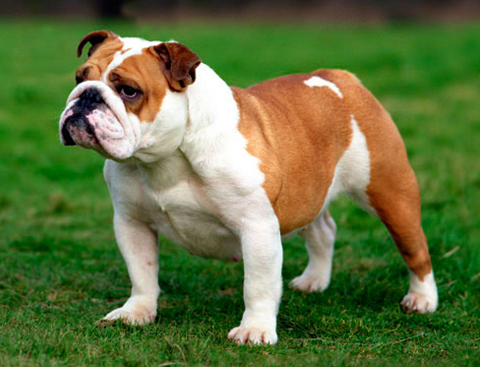

Амстафф

Предки породы — привезённые в 1870-х годах мелкие травильные собаки Испании, Ирландии, Англии, Шотландии, Италии.
С 1880 года сформировавшуюся в Америке породу стали называть «пит-бультерьер», под таким названием порода была признана в 1898 году Американским объединённым клубом (UKC).
Собаки этой породы активны и смелы, обладают целеустремленностью и своеобразным интеллектом.
Их характер сочетает ряд противоположных качеств: ласку и силу, непримиримость и благодушие, упорство и чувствительность. Эта порода вряд ли подойдет человеку, который впервые заводит собаку.Стаффы бесстрашны, но стремятся к собственной безопасности. Если амстафф решит, что к нему несправедливы, он всем своим видом покажет обиду. Может жить в городской квартире, получая достаточно умственных и физических нагрузок при выгуле. Абсолютно не подходят для уличного, вольерного, цепного содержания.
Порода хорошо поддается дрессировке, но требует работы с опытным кинологом. При правильном отношении владельца к воспитанию и дрессировке и отсутствии наследственных проблем с психикой, не проявляют агрессию к людям. Могут проявлять агрессию к другим собакам.
Амстафф имеет низкий порог раздражительности. Необходима ранняя социализация и последовательное воспитание. Агрессия может проявиться в результате защитно-оборонительной реакции, в ситуации, когда животное чувствует какую-либо опасность. Заводя американского стаффордширского терьера, владельцы должны быть готовы не только заниматься дрессировкой, но и уделять особое внимание физическим нагрузкам.
Другие виды собак
")